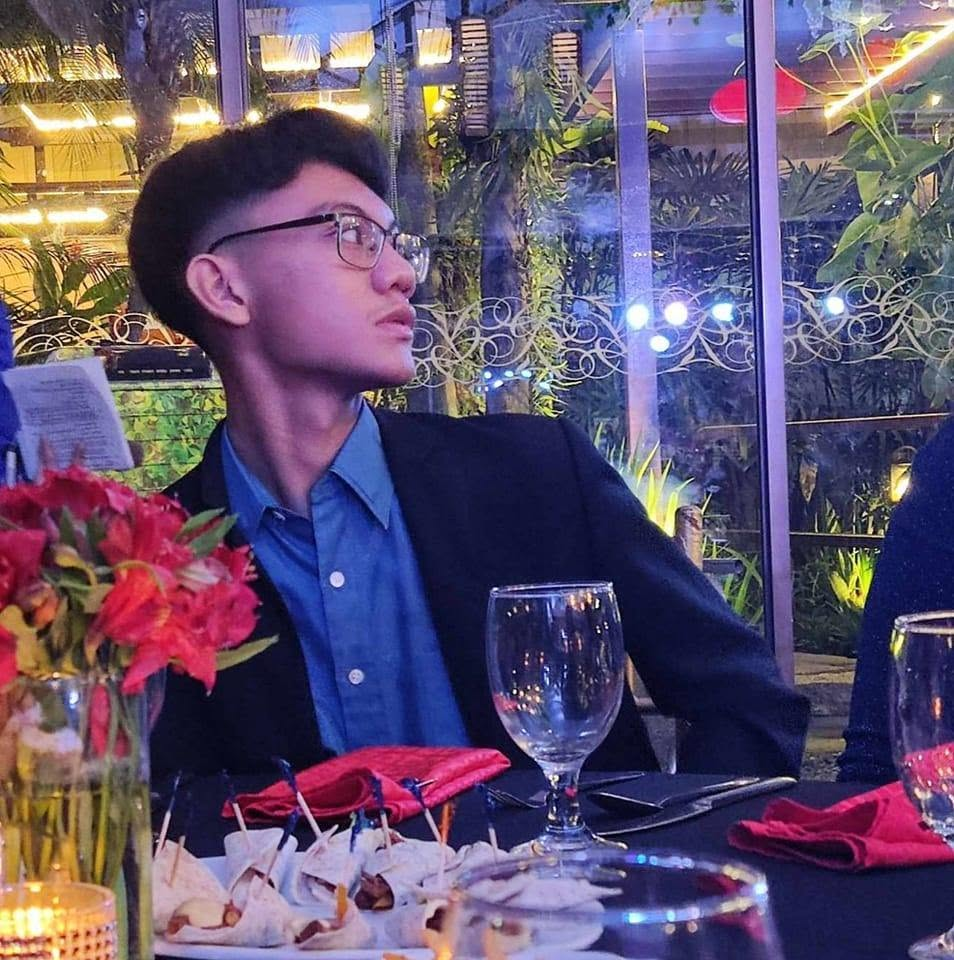

John Matthew Ibañez, known as Matthew or JM, is an irregular 4th year computer engineering student at the University of the East, Manila. I'm a officer at UE ARMS and a member of an christian group I have a passion for exploring more knowledge about robotics and technologies or mostly about how to innovate a product that can benefit my studies and the environment. My hobbies are playing guitar and editing.